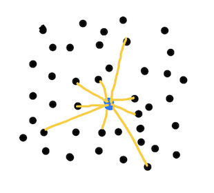
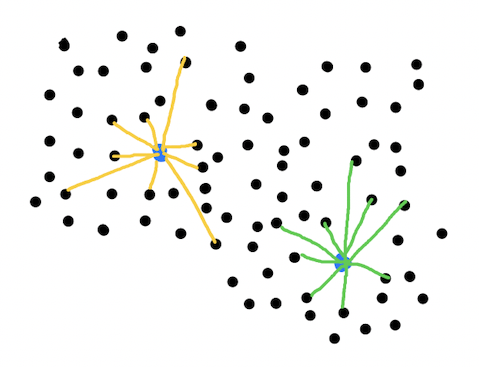
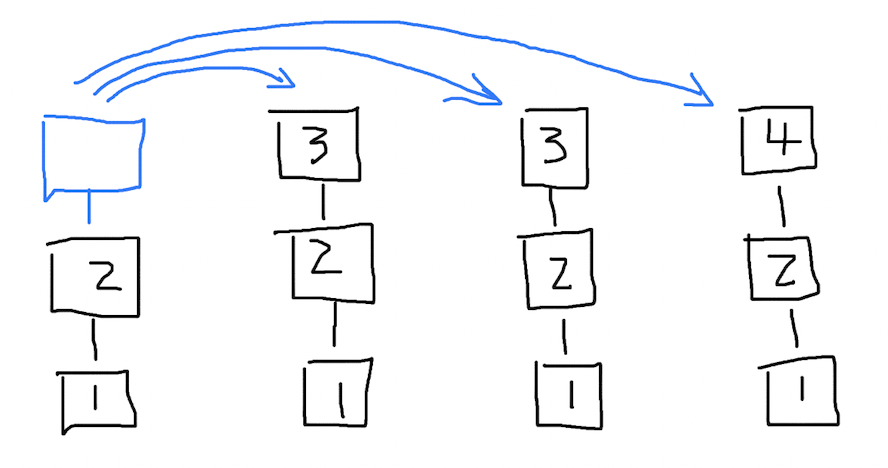
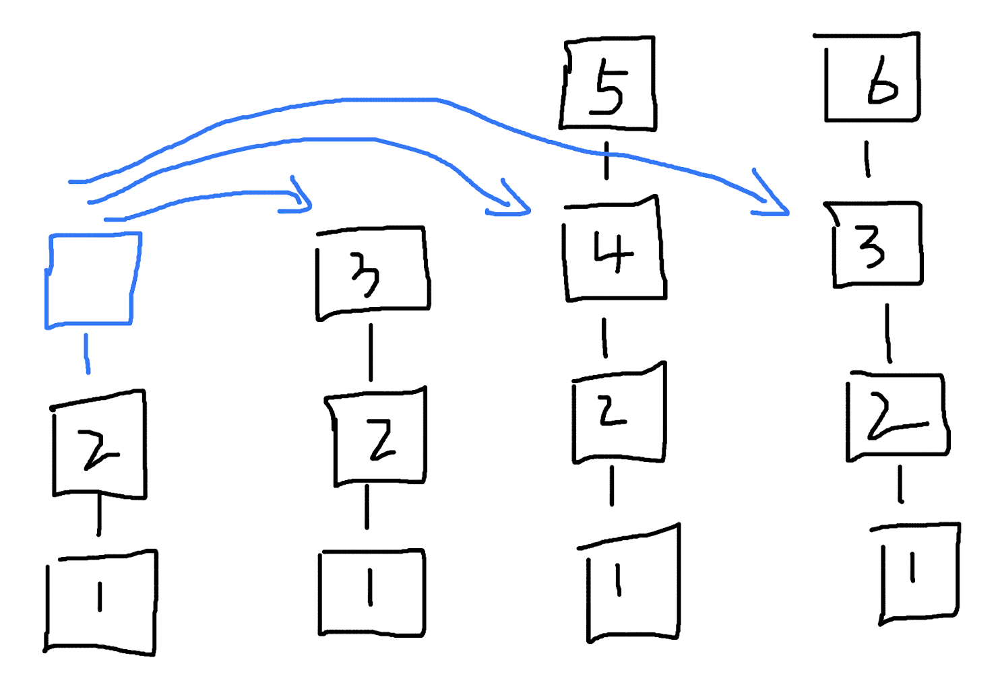
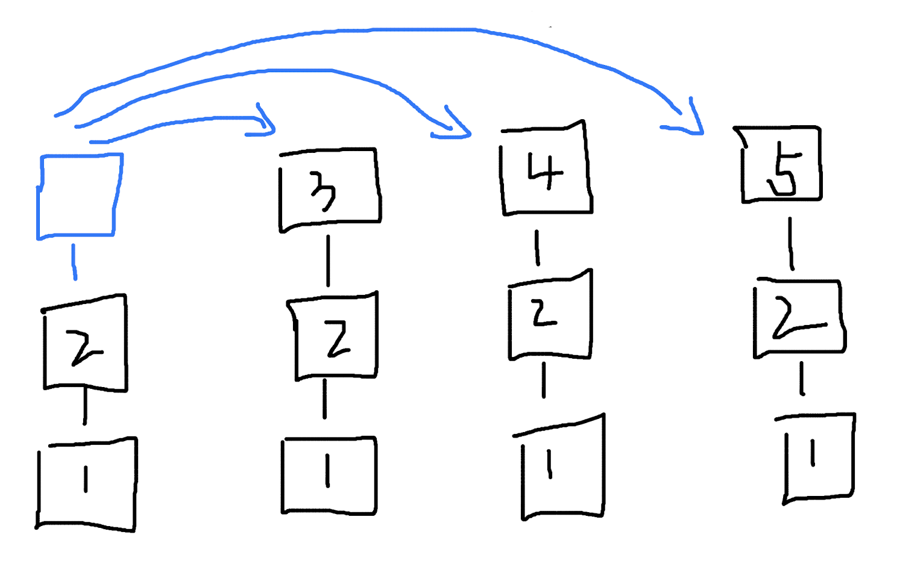
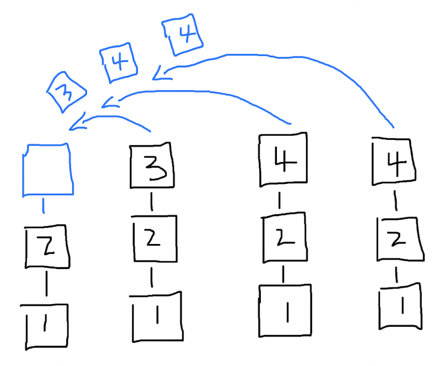
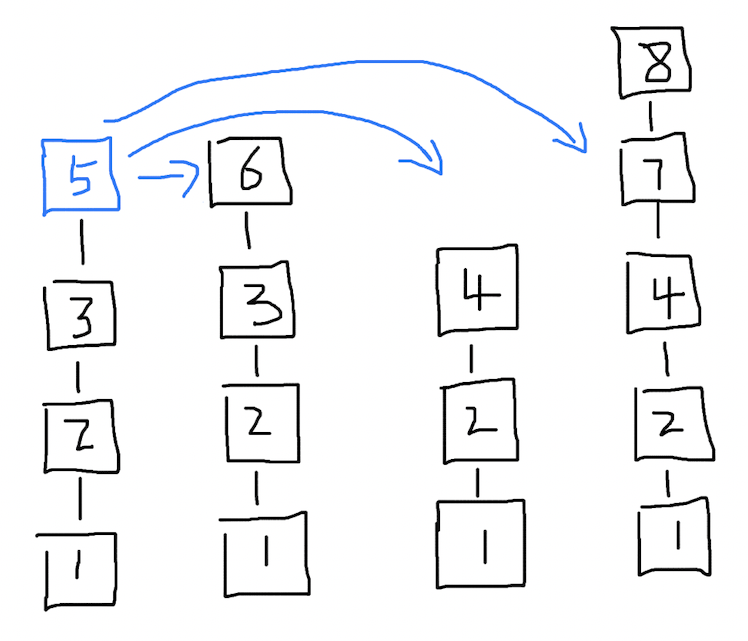
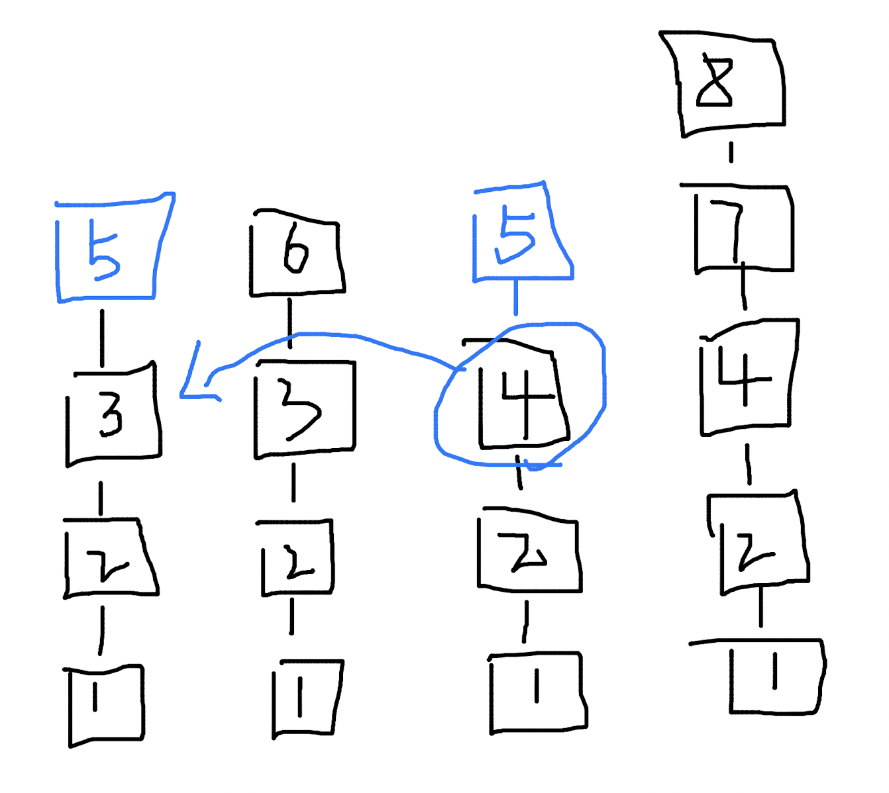
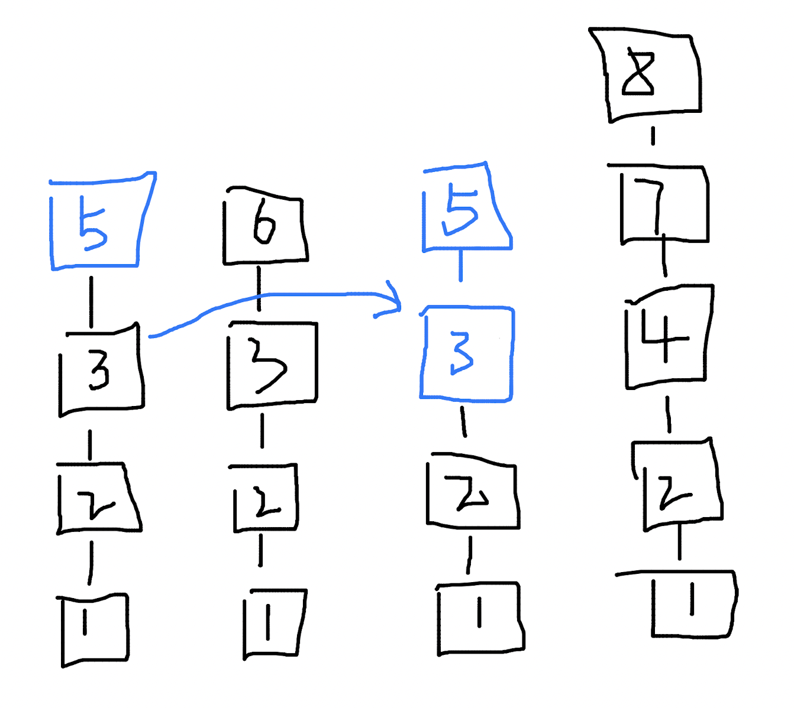

The meaning of “egocentrism” is that for each person, the size of the world depends on how much of the world they can reach. The world is vast and unrelated to me; the world is small and all related to me. The people one knows, the things one understands, and the information one receives are all limited, destined or not. You cannot know everyone in the world or understand everything in the world. So what if you are knowledgeable and experienced?
In blockchain, the consensus mechanism is a key means to ensure data consistency and also brings the most core decentralized feature to the blockchain. Consensus mechanisms are strongly consistent or achieve majority consistency with certain fault tolerance. Is it possible to have a consensus mechanism that does not prioritize data consistency?
The world is inherently complex. Attempting to synchronize all nodes to just one data state is counterintuitive. Moreover, whether it’s large-scale unauthorized consensus or small-scale identity-based consensus, the method to achieve data consistency is “multi-point to single-point,” meaning only one node processes data at a time. Other nodes either accept the data that meets the conditions after consensus or vote on whether to agree to the data operation before confirmation. In any case, a “hero” node must do something at the critical moment of data change.
Some heroes are powerful, acting first and reporting later. After changing the data, they inform you, “I changed the data.” Initially, you are dissatisfied, but you find that the hero indeed solved problems you couldn’t, and you recognize the hero’s actions.
Other heroes are elected by the public and act cautiously, asking each person, “Do you agree to change this data?” If most agree, the hero acts.
Of course, everyone has an equal chance to be a hero. Some are naturally powerful; others are clever. Opportunities are always there. If you can’t solve the problem, who can you blame? Everyone can be elected. If no one chooses you, who can you blame?
So, why can’t we be our own heroes? Why should we submit to others’ halos? Everyone is their own hero, in their world, in a world limited by personal contact range. A consensus mechanism where the node’s boundary is limited by the network scale it touches.
In an unstructured peer-to-peer network, routing tables are an essential component. The size of the network a node can access depends on how many “contacts” are stored in the routing table. Consensus on data processing is based on the nodes in the routing table. If the routing table has 10 nodes, strive for consensus with these 10 nodes; if it has 10,000 nodes, strive for consensus with 10,000 nodes. No need for a distributed routing table; an ordinary array will do. In this case, the network nodes look like this:
Centered on the current node, the number of connected nodes can be many or few, some far and some near. In the issue of route discovery, nodes also need seed addresses. For example, when a node starts, it first resolves the seed address record:
lookup("seek.domain")
-> 127.0.0.1
-> 127.0.0.2
Then sequentially requests the resolved node addresses to obtain the contents of their routing tables and adds them to its own. This is the usual approach, but it can lead to the node instantly acquiring the entire network’s routing information. This isn’t bad, just feels a bit fast. Meeting a person takes time, talking to people takes time, and you can’t talk to three people simultaneously. Even if you get many contacts, you can’t “multithread” and contact everyone. Our information processing “bandwidth” is limited, and so is the node’s. We can even slightly restrict the speed of network discovery, such as serially processing the action of adding records to the routing table: establish a connection with the node before adding information.
Slowing down route discovery may sound abnormal. Is it intended to keep the network out of sync? Many consensus bottlenecks are due to network bandwidth and protocol interaction complexity. Lowering the communication cost between nodes will also reduce the consensus’s fault tolerance. The network may be divided into different regions, forming various circles.
For consensus algorithms, partitioning is a problem to avoid, but network segmentation is natural and normal. Human thoughts are divided and possibly opposed, but they may agree after some events. Thus, network segmentation is entirely permissible, forming small interconnected or isolated networks. The key is having a mechanism to “correct” such splits, allowing segmented networks to merge under certain conditions.
The concept of the blockchain genesis block is retained here, with all nodes having the same first block. A newly joined node starts from the genesis block, while other nodes have higher block heights. For example, the current node’s block height is 2, and it wants to synchronize block height 3 from the network. The node’s routing table has addresses of other nodes, all with block height 3. The current node requests block height 3 sequentially from other nodes.
After the request, it finds that 2 nodes have identical blocks for height 3, with the same block content, hash, and previous block hash. The current node adopts this block as its 3rd block.
If some nodes have block heights greater than 3, should the highest block height be prioritized? Considering the time dimension, things should follow an order. You can’t skip 3 years and live as a 4-year-old. Blockchain data should also follow a sequence. The current node needs block height 3 and requests block height 3, regardless of other heights. Higher block heights don’t matter if you need height 3.
If each node’s block differs after all requests, whom should you trust?
You have to choose one. If you can’t determine which node or content is trustworthy, choose randomly. Preferably the last requested node, as missed nodes are already missed. The last node is the closest, and you can’t judge if other nodes have identical content until then. After discarding previous nodes, the last node is the choice you can’t let go of.
For actively requesting block data, the key point is requests must be sequential based on the routing table. Before getting a response from the first node, no request is made to the second. You shouldn’t be too capricious. If a node deliberately speeds up and requests multiple sets of data simultaneously, it doesn’t matter. After all, it’s just synchronizing data. Some like it fast, some slow, some enjoy fast living, and some slow living.
Besides actively requesting block data, nodes also receive broadcast messages from other nodes. For example, the current node’s block height is 2, and it receives blocks 3, 4, and 4 from other nodes.
According to the majority principle, should it choose the content of block 4 as its 3rd block? But this has a problem: you can’t predict how many blocks you’ll receive, and you can’t calculate the total amount and proportion of block content. For passively received blocks, take the content of the first received block as the standard.
The order of arrival in life is important. If the required block height is 3 and the received broadcast block height is also 3, then take it. If not, replace it with a more suitable one later. If a node aggressively broadcasts the same block marked from 1 to high heights, hoping a node needing the block will receive it, let it be. Nodes actively synchronizing blocks request content by height, so this aggressive approach doesn’t yield much benefit.
Who generates data in the network? To solve this, we can define that every node can generate data. An extreme case is where everyone trusts only their data, playing solo, making the network a single-player version. So nodes need to spread their generated data, sending it to other nodes. For other nodes, it’s “passive data synchronization.”
Active block data broadcasting has two cases: a node needs the block, and you happen to send it.
The current node receives a content request, adds block height 4, and directly persists the block to the main chain. It then starts broadcasting block height 4, sequentially through the routing table. The current node won’t pack the next block until the broadcast ends. If a node’s block height is 3, you are the first to send it block height 4, and it will accept your block and respond. After receiving the response, you know at least one node accepted your block, and you can continue with the next block. Of course, the node won’t stop broadcasting this round even if it gets a response. This is logical, hoping more nodes accept the block content.
If the receiving node finds the block content is 5 and the previous block hash is 3, not matching its previous block hash 4, it still accepts the block, replacing its blocks until the hash matches.
 This mechanism risks replacing the entire chain upon receiving a block, a serious unacceptable cost. But such risk exists. You met a bad person who undermined your values, leading you astray. Reflect on why your routing table has such